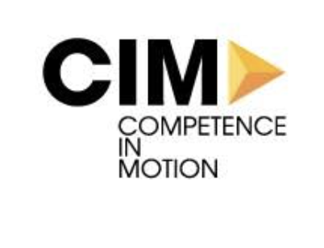

Doppelte Dateneingabe
Informationen wandern manuell zwischen E-Mail, Excel und Fachsoftware.
Wir analysieren wiederkehrende Abläufe, beseitigen Medienbrüche und automatisieren den größten Zeitfresser – mit dem Ziel, 10+ Stunden Verwaltungsaufwand pro Woche zurückzugewinnen.
Wir setzen nicht bei einem Tool an, sondern dort, wo im Alltag Zeit verloren geht.
Informationen wandern manuell zwischen E-Mail, Excel und Fachsoftware.
Anfragen, Freigaben und Dokumente bleiben bei einzelnen Personen hängen.
Protokolle, Dokumentation und Standardtexte entstehen jedes Mal neu.
Produkt- und Lagerdaten sind nicht zentral auffindbar oder aktuell sichtbar.
Ein geschütztes Lager- und Verwaltungssystem bündelt Bestände, Produktdaten, Kategorien und Hersteller in einer zentralen, durchsuchbaren Oberfläche.
Ein internationaler Onlineshop macht lagernde Industriekomponenten über Suche, Kategorien und strukturierte Produktseiten direkt zugänglich.
Automatisierte Transkription bereitet gesprochene Notizen strukturiert für die Patientendokumentation auf und reduziert manuelle Schreibarbeit.

Dokumentation vorbereitetWir betrachten Auslöser, Schritte, Übergaben, Systeme und tatsächlichen Zeitaufwand.
Du erhältst eine klare Einschätzung, welcher Ablauf den größten wirtschaftlichen Nutzen bietet.
Wir starten klein, integrieren bestehende Systeme und testen die Lösung im echten Alltag.
Zeitgewinn und Prozessqualität werden überprüft, bevor die Lösung erweitert wird.
Für Unternehmen mit wiederkehrender Büroarbeit, doppelter Dateneingabe, manuellen Übergaben oder verstreuten Informationen. Entscheidend ist nicht die Branche, sondern ein klar wiederkehrender Ablauf.
Nein. Der Prozess-Check prüft ehrlich, ob dieses Potenzial vorhanden ist. Wir versprechen keine pauschale Einsparung und setzen nur um, was technisch und wirtschaftlich sinnvoll ist.
Nicht zwingend. Bestehende Systeme können häufig über Schnittstellen verbunden und um passende Workflows ergänzt werden.
Das Erstgespräch und die erste Potenzialeinschätzung sind unverbindlich. Für eine tiefergehende Analyse erhältst du vorab einen klar abgegrenzten Leistungsumfang.
Schick uns die Ausgangslage. Wir sagen dir ehrlich, ob sich ein genauerer Prozess-Check lohnt.